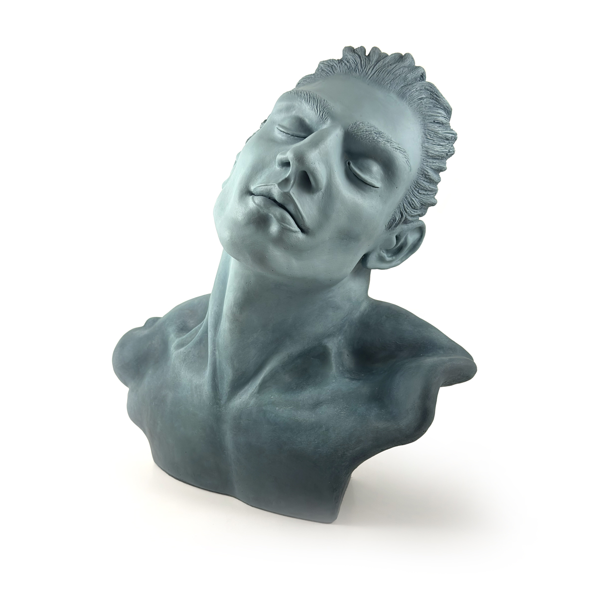
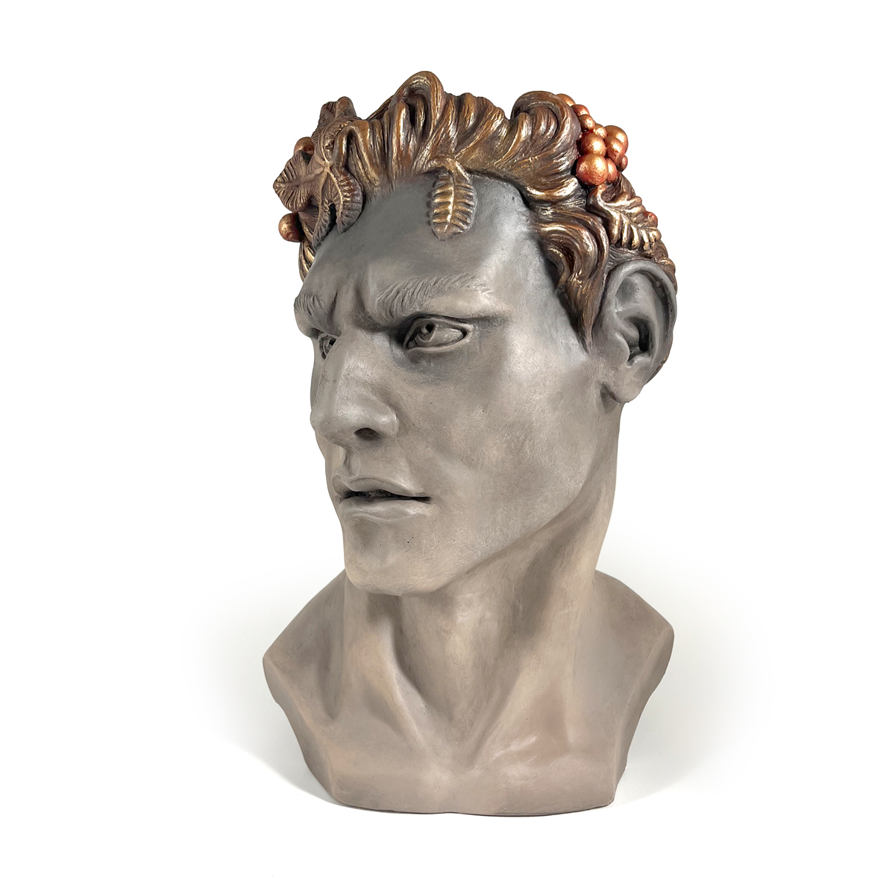
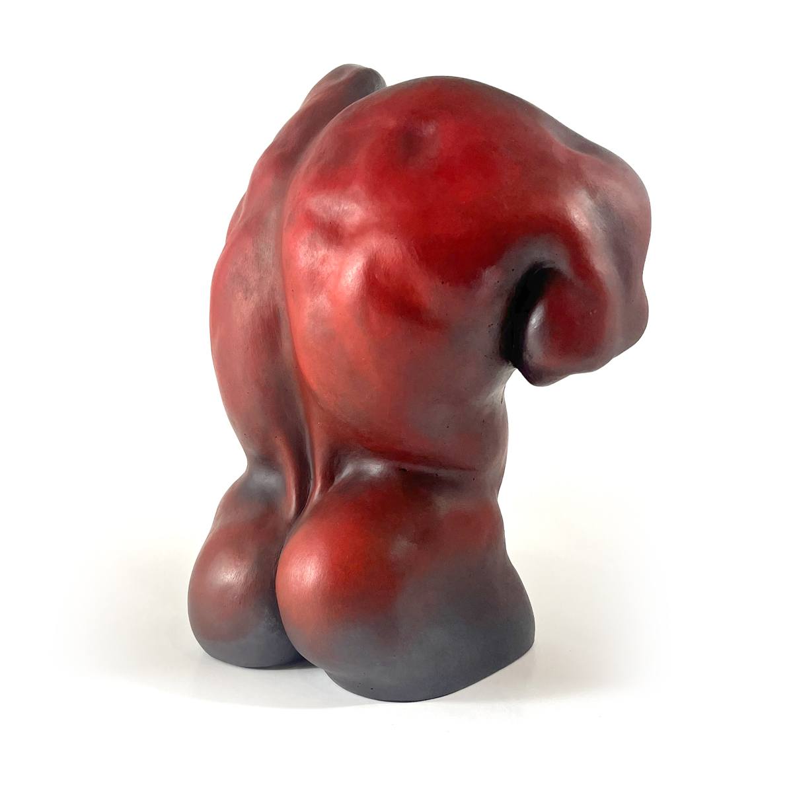
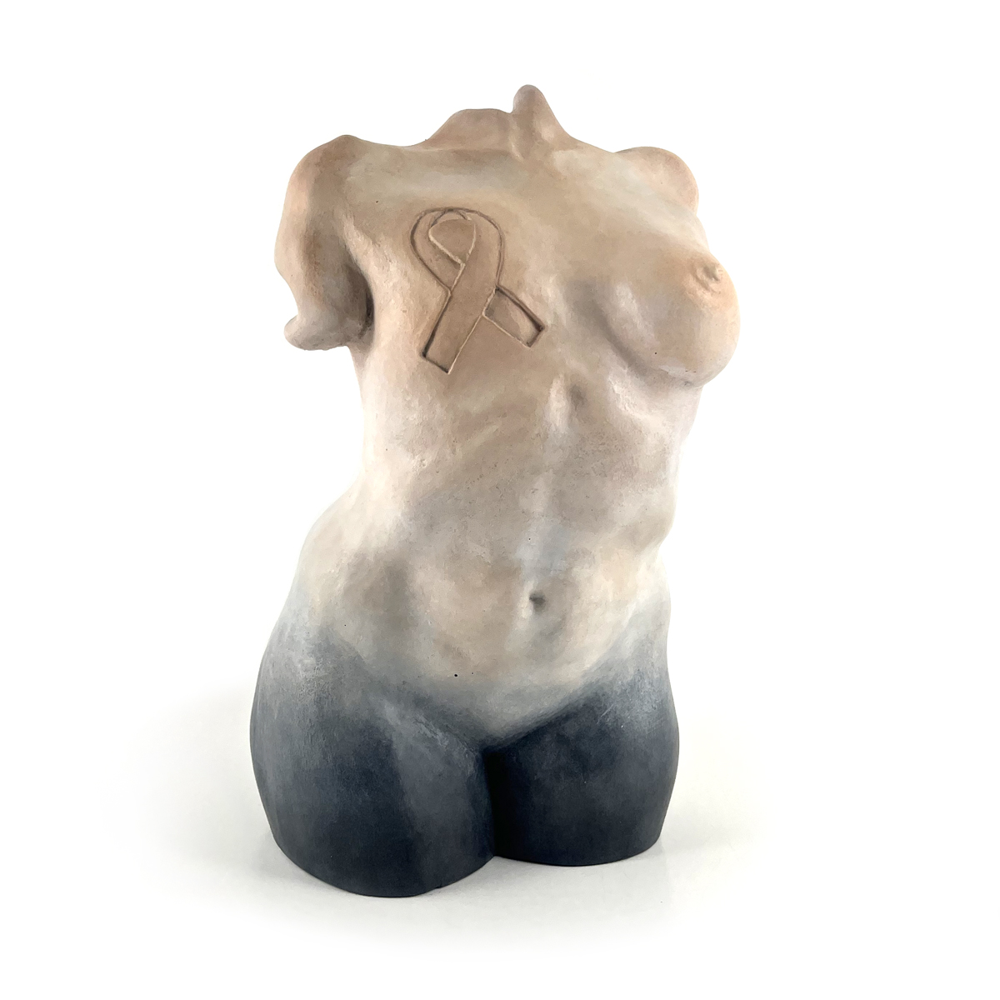
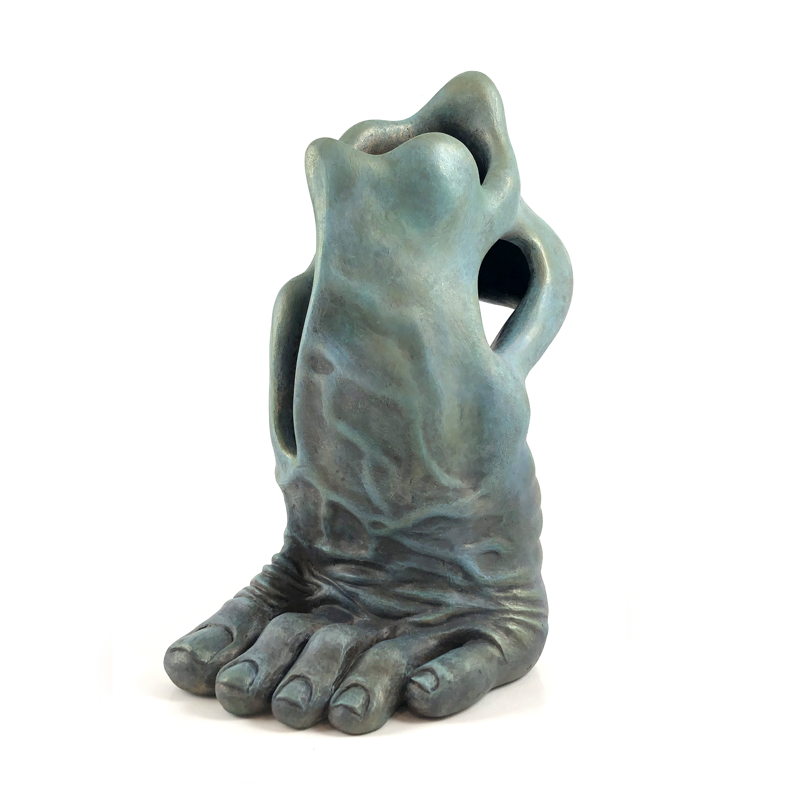
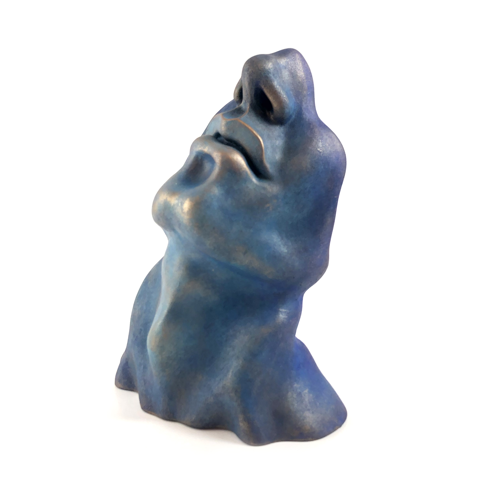
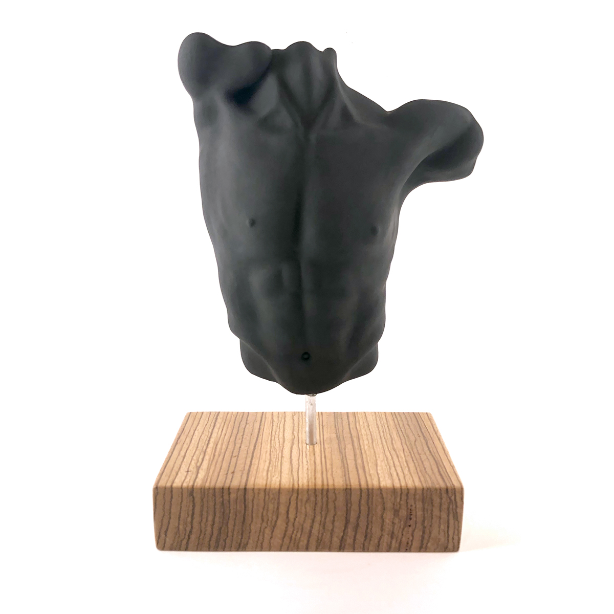
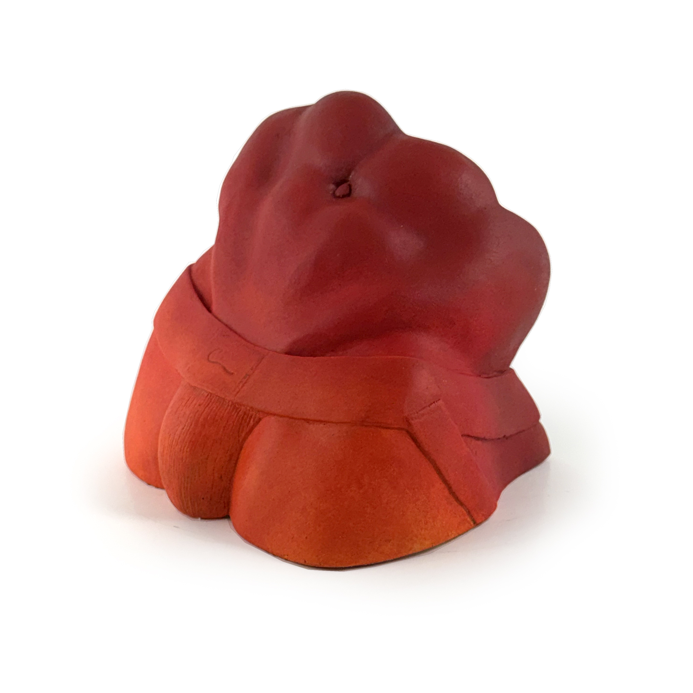

I wanted to create someting sensual. Some of the inspiration for this piece comes from Michelangelo the Dying Slave, some say that closed eyes suggests the soul escaping the prison of the physical body.
Limited edition of 3.

It had been long time since I sculpted anything. So I sat down and had something in mind, but as it turned out is nothing what I thought. My mother just passed away this year so this is an homage to her. She always said -why are you wasting your time on the computer when you are blessed with golden hands. So this is my satyr in the honor of my mother.
Limited edition of 3.

I saw this photograph of this beautiful body, so I just had to sculpt this piece.
Limited edition of 7.

This sculpture is for all the women who struggle with breast cancer, including my sister and my mother who both had mastectomies.
Limited edition of 6.

I made the original clay sculpture during the 2020 Covid-19 pandemic. The 6-foot distance was the norm, and what better ways to express my frustration into something positive like a fluid foot with lots of negative space. Plus I always wanted to sculpt a foot.
Limited edition of 11.

I made this sculpture a few years back, when Covid happened I realized the face is exactly what we were covering up during the pandemic.
Limited edition of 20.

All of my sculptures are shaped with a lot of negative space and robust, positive energy. The grace and beauty of each piece can be seen whether I carve into the back or front.
Limited edition of 15.

I made the original clay sculpture during the 2020 Covid-19 pandemic. What better way to spend time when work came to a grinding halt and do what I love, sculpt.
Limited edition of 12.
